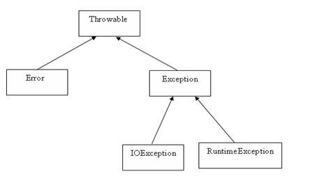

Java Exceptions Handling
An exception is a problem that
arises during the execution of a program. An exception can occur for many
different reasons, including the following:
Some of these exceptions are caused
by user error, others by programmer error, and others by physical resources
that have failed in some manner.
To understand how exception handling
works in Java, you need to understand the three categories of exceptions:
Exception Hierarchy:
All exception classes are subtypes
of the java.lang.Exception class. The exception class
is a subclass of the Throwable class. Other than the
exception class there is another subclass called Error which is derived from
the Throwable class.
Errors are not normally trapped form
the Java programs. These conditions normally happen in case of severe failures,
which are not handled by the java programs. Errors are generated to indicate
errors generated by the runtime environment. Example :
JVM is out of Memory. Normally programs cannot recover from errors.
The Exception class has two main
subclasses: IOException class and RuntimeException
Class.

Here is a list of most common
checked and unchecked Java’s Built-in exceptions.
Exceptions Methods:
Following is the list of important medthods available in the Throwable
class.
|
SN |
Methods
with Description |
|
1 |
public String getMessage() |
|
2 |
public Throwable getCause() |
|
3 |
public String toString() |
|
4 |
public void printStackTrace() |
|
5 |
public StackTraceElement [] getStackTrace() |
|
6 |
public Throwable fillInStackTrace() |
Catching Exceptions:
A method catches an exception using
a combination of the try and catch keywords. A try/catch block is
placed around the code that might generate an exception. Code within a
try/catch block is referred to as protected code, and the syntax for using
try/catch looks like the following:
try { //Protected code }catch(ExceptionName e1) { //Catch block }
A catch statement involves declaring
the type of exception you are trying to catch. If an exception occurs in protected
code, the catch block (or blocks) that follows the try is checked. If the type
of exception that occurred is listed in a catch block, the exception is passed
to the catch block much as an argument is passed into a method parameter.
Example:
The following is an array is
declared with 2 elements. Then the code tries to access the 3rd element of the
array which throws an exception.
// File Name : ExcepTest.java import java.io.*; public class ExcepTest{ public static void main(String args[]){ try{ int a[] = new int[2]; System.out.println("Access element three :" + a[3]); }catch(ArrayIndexOutOfBoundsException e){ System.out.println("Exception thrown :" + e); } System.out.println("Out of the block"); } }
This would produce the following
result:
Exception thrown
:java.lang.ArrayIndexOutOfBoundsException:
3
Out of the block
Multiple catch Blocks:
A try block can be followed by
multiple catch blocks. The syntax for multiple catch blocks looks like the
following:
try { //Protected code }catch(ExceptionType1 e1) { //Catch block }catch(ExceptionType2 e2) { //Catch block }catch(ExceptionType3 e3) { //Catch block }
The previous statements demonstrate
three catch blocks, but you can have any number of them after a single try. If
an exception occurs in the protected code, the exception is thrown to the first
catch block in the list. If the data type of the exception thrown matches
ExceptionType1, it gets caught there. If not, the exception passes down to the
second catch statement. This continues until the exception either is caught or
falls through all catches, in which case the current method stops execution and
the exception is thrown down to the previous method on the call stack.
Example:
Here is code segment showing how to
use multiple try/catch statements.
try { file = new FileInputStream(fileName); x = (byte) file.read(); }catch(IOException i) { i.printStackTrace(); return -1; }catch(FileNotFoundException f) //Not valid! { f.printStackTrace(); return -1; }
The throws/throw Keywords:
If a method does not handle a
checked exception, the method must declare it using the throws keyword.
The throws keyword appears at the end of a method's signature.
You can throw an exception, either a
newly instantiated one or an exception that you just caught, by using the throw
keyword. Try to understand the different in throws and throw keywords.
The following method declares that
it throws a RemoteException:
import java.io.*; public class className { public void deposit(double amount) throws RemoteException { // Method implementation throw new RemoteException(); } //Remainder of class definition }
A method can declare that it throws
more than one exception, in which case the exceptions are declared in a list
separated by commas. For example, the following method declares that it throws
a RemoteException and an InsufficientFundsException:
import java.io.*; public class className { public void withdraw(double amount) throws RemoteException, InsufficientFundsException { // Method implementation } //Remainder of class definition }
The finally Keyword
The finally keyword is used to
create a block of code that follows a try block. A finally block of code always
executes, whether or not an exception has occurred.
Using a finally block allows you to
run any cleanup-type statements that you want to execute, no matter what
happens in the protected code.
A finally block appears at the end
of the catch blocks and has the following syntax:
try { //Protected code }catch(ExceptionType1 e1) { //Catch block }catch(ExceptionType2 e2) { //Catch block }catch(ExceptionType3 e3) { //Catch block }finally { //The finally block always executes. }
Example:
public class ExcepTest{ public static void main(String args[]){ int a[] = new int[2]; try{ System.out.println("Access element three :" + a[3]); }catch(ArrayIndexOutOfBoundsException e){ System.out.println("Exception thrown :" + e); } finally{ a[0] = 6; System.out.println("First element value: " +a[0]); System.out.println("The finally statement is executed"); } } }
This would produce the following
result:
Exception thrown
:java.lang.ArrayIndexOutOfBoundsException:
3
First element value: 6
The finally statement is executed
Note the following:
Declaring you own Exception:
You can create your own exceptions
in Java. Keep the following points in mind when writing your own exception
classes:
We can define our own Exception
class as below:
class MyException extends Exception{ }
You just need to extend the
Exception class to create your own Exception class. These are considered to be
checked exceptions. The following InsufficientFundsException
class is a user-defined exception that extends the Exception class, making it a
checked exception. An exception class is like any other class, containing
useful fields and methods.
Example:
// File Name InsufficientFundsException.java import java.io.*; public class InsufficientFundsException extends Exception { private double amount; public InsufficientFundsException(double amount) { this.amount = amount; } public double getAmount() { return amount; } }
To demonstrate using our
user-defined exception, the following CheckingAccount
class contains a withdraw() method that throws an InsufficientFundsException.
// File Name CheckingAccount.java import java.io.*; public class CheckingAccount { private double balance; private int number; public CheckingAccount(int number) { this.number = number; } public void deposit(double amount) { balance += amount; } public void withdraw(double amount) throws InsufficientFundsException { if(amount <= balance) { balance -= amount; } else { double needs = amount - balance; throw new InsufficientFundsException(needs); } } public double getBalance() { return balance; } public int getNumber() { return number; } }
The following BankDemo
program demonstrates invoking the deposit() and
withdraw() methods of CheckingAccount.
// File Name BankDemo.java public class BankDemo { public static void main(String [] args) { CheckingAccount c = new CheckingAccount(101); System.out.println("Depositing $500..."); c.deposit(500.00); try { System.out.println("\nWithdrawing $100..."); c.withdraw(100.00); System.out.println("\nWithdrawing $600..."); c.withdraw(600.00); }catch(InsufficientFundsException e) { System.out.println("Sorry, but you are short $" + e.getAmount()); e.printStackTrace(); } } }
Compile all the above three files
and run BankDemo, this would produce the following
result:
Depositing $500...
Withdrawing $100...
Withdrawing $600...
Sorry, but you are short $200.0
InsufficientFundsException
at
CheckingAccount.withdraw(CheckingAccount.java:25)
at
BankDemo.main(BankDemo.java:13)
Common Exceptions:
In Java, it is possible to define
two catergories of Exceptions and Errors.